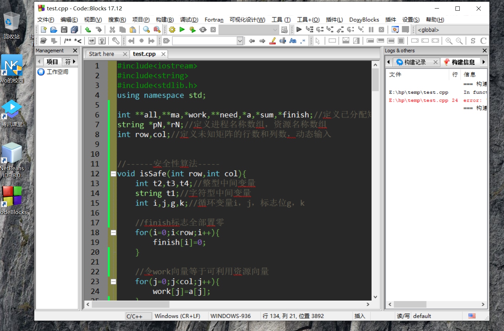
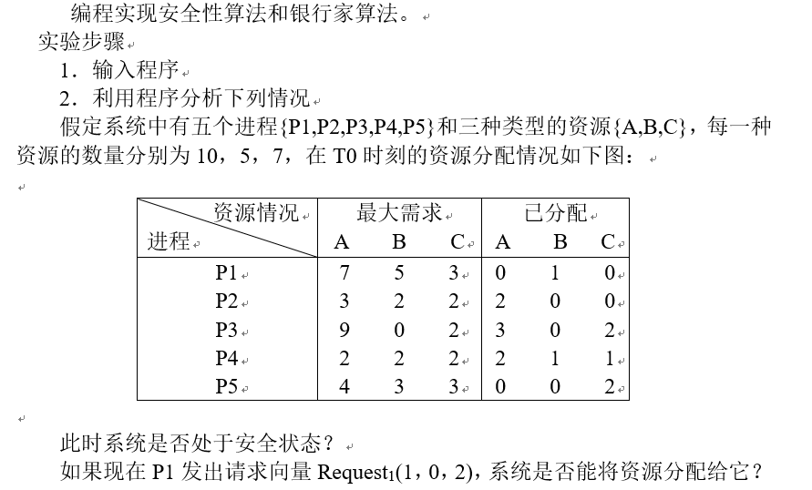
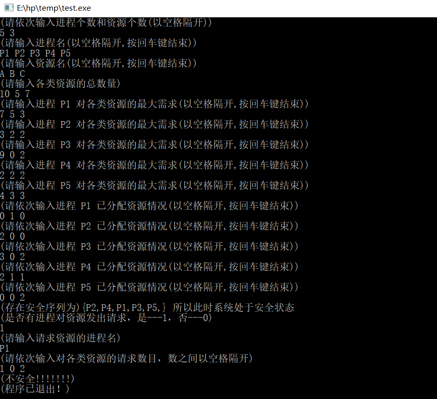
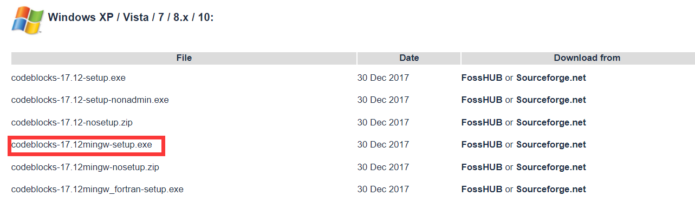

此程序在Windows10 CodeBlocks17.12环境下测试运行，其他编程环境未经测试！

作业需求↓↓↓↓↓↓

运行效果图如下

（codeblocks下载地址http://www.codeblocks.org/downloads/binaries）

C++代码
1 #include<iostream>
2 #include<string>
3 #include<stdlib.h>
4 using namespace std;
5
6 int **all,**ma,*work,**need,*a,*sum,*finish;//定义已分配矩阵，最大需求矩阵，工作向量，需求矩阵，可利用资源向量，各类资源总个数，finish标志
7 string *pN,*rN;//定义进程名称数组，资源名称数组
8 int row,col;//定义未知矩阵的行数和列数，动态输入
9
10
11 //------安全性算法-----
12 void isSafe(int row,int col){
13 int t2,t3,t4;//整型中间变量
14 string t1;//字符型中间变量
15 int i,j,g,k;//循环变量i，j，标志位g，k
16
17 //finish标志全部置零
18 for(i=0;i<row;i++){
19 finish[i]=0;
20 }
21
22 //令work向量等于可利用资源向量
23 for(j=0;j<col;j++){
24 work[j]=a[j];
25 }
26
27 g=0;
28 for(i=0;i<row;i++){
29 k=0;
30 //用以判断某类资源的需求是否全部小于可分配资源
31 for(j=0;j<col;j++){
32 if(need[i][j]<=work[j])
33 {k++;}
34 }
35 if(k==col){
36 for(j=0;j<col;j++){
37 work[j]=work[j]+all[i][j];
38 }
39
40
41 //对Need矩阵进行排序
42 for(j=0;j<col;j++){
43 t2=need[i][j];
44 for(int temp=i;temp>g;temp--){
45 need[temp][j]=need[temp-1][j];
46 }
47 need[g][j]=t2;
48 }
49
50 //对已分配矩阵进行排序
51 for(j=0;j<col;j++){
52 t3=all[i][j];
53 for(int temp=i;temp>g;temp--){
54 all[temp][j]=all[temp-1][j];
55 }
56 all[g][j]=t3;
57 }
58 t1=pN[i];
59
60 //对进程名称数组进行排序
61 for(int temp=i;temp>g;temp--){
62 pN[temp]=pN[temp-1];
63 }
64 pN[g]=t1;
65
66 finish[i]=1;//置标志位为1
67
68 //对标志位finish进行排序
69 t4=finish[i];
70 for(int temp=i;temp>g;temp--){
71 finish[temp]=finish[temp-1];
72 }
73 finish[g]=t4;
74 i=g;
75 g++;
76 }
77
78 }
79
80 //判断标志位，只要有finish标志位0的进程，结束整个程序，若全为1，则输出安全序列
81 for(i=0;i<row;i++){
82 if(finish[i]==0){
83 cout<<"(不安全!!!!!!!)"<<endl<<"(程序已退出！)"<<endl;
84 exit(1);
85 }
86 }
87 cout<<"(存在安全序列为){";
88 for(i=0;i<row;i++){
89 cout<<pN[i]<<",";
90 }
91 cout<<"} 所以此时系统处于安全状态"<<endl;
92 }
93
94
95
96 //------银行家算法-----
97 void request(int col){
98 int *py,i,j;//定义t0后进程请求资源的资源数组和循环变量i，j
99 string px;//资源名变量
100 py=new int[col];//分配数组大小
101 cout<<"(请输入请求资源的进程名)"<<endl;
102 cin>>px;//输入t0后进程请求资源的进程名
103
104 //寻找请求资源的进程名在进程名数组中的位置
105 for(i=0;i<row;i++){
106 if(px==pN[i]){
107 cout<<"(请依次输入对各类资源的请求数目，数之间以空格隔开)"<<endl;
108 for(j=0;j<col;j++){
109 cin>>py[j];
110 }
111 break;
112 }
113 }
114
115 int re1=0,re2=0;//定义标志位，分别用以判断某进程请求的各类资源是否全部小于等于最大需求和可分配资源
116 for(j=0;j<col;j++){
117 if(py[j]<=need[i][j])
118 {re1++;}
119 if(py[j]<=a[j])
120 {re2++;}
121 }
122
123
124 //若符合标志位判断标准，对资源进行修改
125 if(re1==col&&re2==col){
126 for(j=0;j<col;j++){
127 need[i][j]=need[i][j]-py[j];
128 a[j]=a[j]-py[j];
129 all[i][j]=all[i][j]+py[j];
130 }
131 isSafe(row,col);//对资源重新分配后 调用安全性算法
132 }else{cout<<"(不安全！！！)"<<endl;}
133
134 delete[] py;//释放
135 }
136 int main()
137 {
138 int i,j,ch;//定义循环变量i，j和判断变量ch(判断是否有进程请求资源)
139 cout<<"(请依次输入进程个数和资源个数(以空格隔开))"<<endl;
140 cin>>row>>col;
141
142 //以下是对数组或者矩阵分配大小
143 pN=new string[row];//进程名数组
144 rN=new string[col];//资源名数组
145 a=new int[col];//可利用资源数组
146 sum=new int[col];//各类资源总个数
147 finish=new int[row];//各类资源总个数
148 work=new int[col];
149
150 //动态分配 分配矩阵
151 all=new int*[row];
152 for(i=0;i<row;i++){
153 all[i]=new int[col];
154 }
155
156 //动态分配最大需求矩阵
157 ma=new int*[row];
158 for(i=0;i<row;i++){
159 ma[i]=new int[col];
160 }
161
162 //动态分配需求矩阵
163 need=new int*[row];
164 for(i=0;i<row;i++){
165 need[i]=new int[col];
166 }
167
168
169 cout<<"(请输入进程名(以空格隔开,按回车键结束))"<<endl;
170 for(i=0;i<row;i++){
171 cin>>pN[i];
172 }
173
174 cout<<"(请输入资源名(以空格隔开,按回车键结束))"<<endl;
175 for(i=0;i<col;i++){
176 cin>>rN[i];
177 }
178
179 cout<<"(请输入各类资源的总数量)"<<endl;
180 for(i=0;i<col;i++){
181 cin>>sum[i];
182 }
183
184
185 //最大矩阵
186 for(i=0;i<row;i++){
187 cout<<"(请输入进程 "+pN[i]+" 对各类资源的最大需求(以空格隔开,按回车键结束))"<<endl;
188 for(j=0;j<col;j++){
189 cin>>ma[i][j];
190 }
191 }
192
193
194 //分配矩阵
195 for(i=0;i<row;i++){
196 cout<<"(请依次输入进程 "+pN[i]+" 已分配资源情况(以空格隔开,按回车键结束))"<<endl;
197 for(j=0;j<col;j++){
198 cin>>all[i][j];
199 }
200 }
201
202
203 //需求矩阵
204 for(i=0;i<row;i++){
205 for(j=0;j<col;j++){
206 need[i][j]=ma[i][j]-all[i][j];
207 }
208 }
209
210
211 //可利用资源
212 for(j=0;j<row;j++){
213 a[j]=sum[j]-all[0][j];
214 }
215 for(j=0;j<col;j++){
216 for(i=1;i<row;i++){
217 a[j]=a[j]-all[i][j];
218 }
219 }
220
221 isSafe(row,col);//调用安全性算法
222 cout<<"(是否有进程对资源发出请求，是---1，否---0)"<<endl;
223 cin>>ch;
224 if(ch==1){
225 request(col);//调用银行家算法
226 }
227
228
229
230 //释放
231 for(i=0;i<row;i++){
232 delete[] all[i];
233 delete[] ma[i];
234 delete[] need[i];
235 }
236 delete[] all,ma,need,pN,rN,a,sum,work,finish;
237 return 0;
238 }
2019-04-20-20:39:05